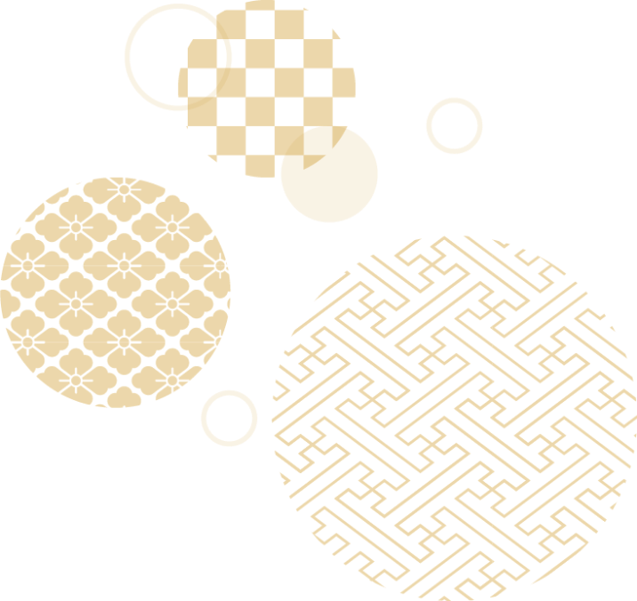

誠和音芸は、代表坂田誠山が主宰するNPO法人ドルチェ邦楽合奏団の
活動の中で生まれた作品を中心に、尺八や箏などの縦譜、及び五線譜の
楽譜とCDの出版などを行ってます。
NPO法人ドルチェ邦楽合奏団は「邦楽って楽しいの？」「もちろん！」を
モットーに活動しています。
アマチュア主体の合奏団ですが、周年記念演奏会では2000人規模のホールが
満杯の大盛況になるなど、多くの方からご好評頂いております。
邦楽愛好家の皆さんが楽しい曲に会って、自身も楽しみ、聴衆も楽しみ、
このプラスのスパイラルが巻き起こる事でさらなる盛り上がりが見られるでしょう。
生まれた作品たちを通じて、あなたの日々を彩るお手伝いができましたら幸いです。